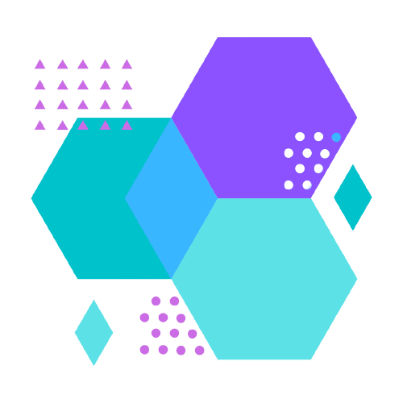

a guide to frontiers in science.
youth journal submissions open!
Tellura is accepting submissions for our youth journal! Apply here.
welcome to tellura
We work to provide accessible guides, materials, and posts that help students learn about scientific research. Science involves formulating hypotheses, testing them, and then creating conclusions from their experiments. And, it involves sharing this information with the global scientific community through journals, articles, and more.
It can be difficult to find the credible sources that are centralized, which is why Tellura is here. The content on this website is published periodically by McMaster University undergraduate students. We have a variety of initiatives and resources available to help younger students learn about research.
join us
Tellura is still accepting general members, and will continue to have new initiatives and departments. If you are a McMaster University student and want to join our team, apply below! :)

meet our team
Check out our staff, who work to provide all of the content on Tellura. All of us are McMaster University students that are committed towards providing accessible guides and materials about science research to younger audiences.